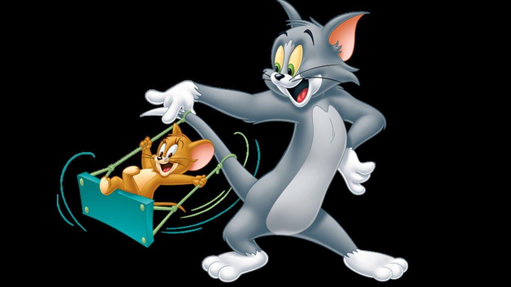
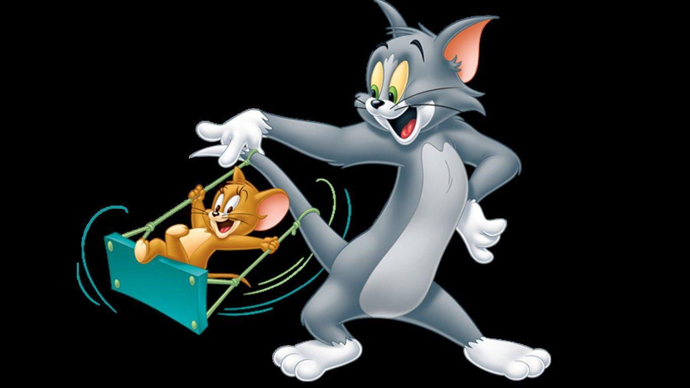

T&J

Tom and Jerry
Tom
Main Characters of Doraemon
- Doraemon
- Nobita
- Shizuka
- Suneo
- Takeshi Goda
Others Characters from Doraemon
- Dorami
- Dekisugi
- Mini-Doras
- Sensei
- Jaiko
Pikachu
Pikachu is the BestFriend of Ash
I have come from 22nd Century
--Doraemon
Click on images for title songs
 
